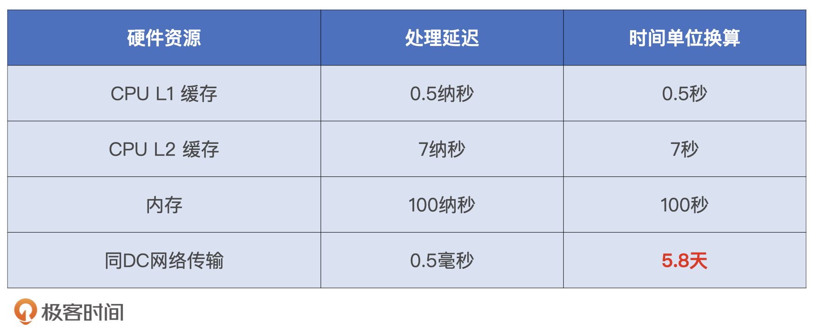
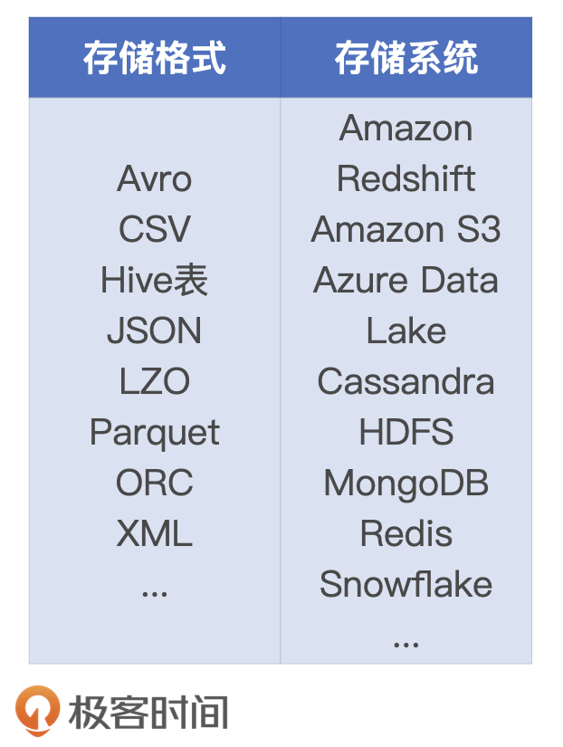
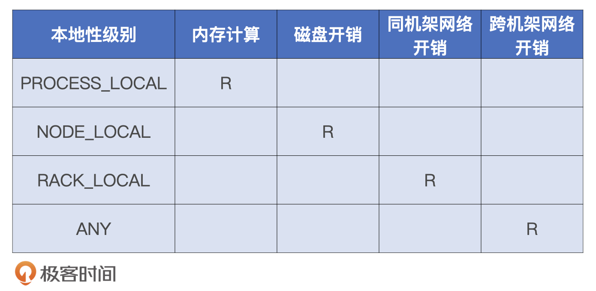
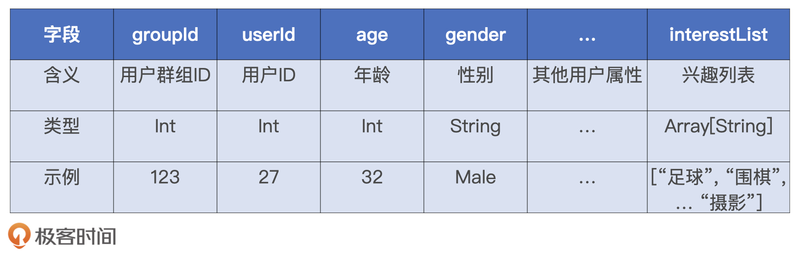
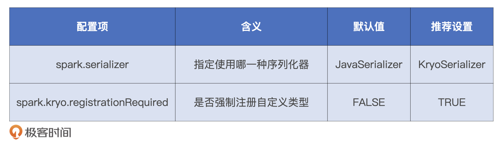

- 00 开篇词 Spark性能调优，你该掌握这些“套路”.md.html
- 01 性能调优的必要性：Spark本身就很快，为啥还需要我调优？.md.html
- 02 性能调优的本质：调优的手段五花八门，该从哪里入手？.md.html
- 03 RDD：为什么你必须要理解弹性分布式数据集？.md.html
- 04 DAG与流水线：到底啥叫“内存计算”？.md.html
- 05 调度系统：“数据不动代码动”到底是什么意思？.md.html
- 06 存储系统：空间换时间，还是时间换空间？.md.html
- 07 内存管理基础：Spark如何高效利用有限的内存空间？.md.html
- 08 应用开发三原则：如何拓展自己的开发边界？.md.html
- 09 调优一筹莫展，配置项速查手册让你事半功倍！（上）.md.html
- 10 调优一筹莫展，配置项速查手册让你事半功倍！（下）.md.html
- 11 为什么说Shuffle是一时无两的性能杀手？.md.html
- 12 广播变量（一）：克制Shuffle，如何一招制胜！.md.html
- 13 广播变量（二）：如何让Spark SQL选择Broadcast Joins？.md.html
- 14 CPU视角：如何高效地利用CPU？.md.html
- 15 内存视角（一）：如何最大化内存的使用效率？.md.html
- 16 内存视角（二）：如何有效避免Cache滥用？.md.html
- 17 内存视角（三）：OOM都是谁的锅？怎么破？.md.html
- 18 磁盘视角：如果内存无限大，磁盘还有用武之地吗？.md.html
- 19 网络视角：如何有效降低网络开销？.md.html
- 20 RDD和DataFrame：既生瑜，何生亮？.md.html
- 21 Catalyst逻辑计划：你的SQL语句是怎么被优化的？（上）.md.html
- 22 Catalyst物理计划：你的SQL语句是怎么被优化的（下）？.md.html
- 23 钨丝计划：Tungsten给开发者带来了哪些福报？.md.html
- 24 Spark 3.0（一）：AQE的3个特性怎么才能用好？.md.html
- 25 Spark 3.0（二）：DPP特性该怎么用？.md.html
- 26 Join Hints指南：不同场景下，如何选择Join策略？.md.html
- 27 大表Join小表：广播变量容不下小表怎么办？.md.html
- 28 大表Join大表（一）：什么是“分而治之”的调优思路？.md.html
- 29 大表Join大表（二）：什么是负隅顽抗的调优思路？.md.html
- 30 应用开发：北京市小客车（汽油车）摇号趋势分析.md.html
- 31 性能调优：手把手带你提升应用的执行性能.md.html
- Spark UI（上）深入解读Spark作业的“体检报告”.md.html
- Spark UI（下）：深入解读Spark作业的“体检报告”.md.html
- 期末考试 “Spark性能调优”100分试卷等你来挑战！.md.html
- 结束语 在时间面前，做一个笃定学习的人.md.html
- 捐赠
19 网络视角：如何有效降低网络开销？
你好，我是吴磊。
在平衡不同硬件资源的时候，相比CPU、内存、磁盘，网络开销无疑是最拖后腿的那一个，这一点在处理延迟上表现得非常明显。
下图就是不同硬件资源的处理延迟对比结果，我们可以看到最小的处理单位是纳秒。你可能对纳秒没什么概念，所以为了方便对比，我把纳秒等比放大到秒。这样，其他硬件资源的处理延迟也会跟着放大。最后一对比我们会发现，网络延迟是以天为单位的！

因此，要想维持硬件资源之间的平衡，尽可能地降低网络开销是我们在性能调优中必须要做的。今天这一讲，我就按照数据进入系统的时间顺序，也就是数据读取、数据处理和数据传输的顺序，带你去分析和总结数据生命周期的不同阶段有效降低网络开销的方法。
数据读写
对于绝大多数应用来说，第一步操作都是从分布式文件系统读取数据源。Spark支持的数据源种类非常丰富，涉及的存储格式和存储系统可以说是五花八门。

这么多存储格式和外部存储系统交叉在一起又会有无数种组合，并且每一种组合都有它的应用场景。那么，我们该怎么判断网络开销会出现在哪些场景下呢？其实，不管是什么文件格式，也不管是哪种存储系统，访问数据源是否会引入网络开销，取决于任务与数据的本地性关系，也就是任务的本地性级别，它一共有4种：
- PROCESS_LOCAL：任务与数据同在一个JVM进程中
- NODE_LOCAL：任务与数据同在一个计算节点，数据可能在磁盘上或是另一个JVM进程中
- RACK_LOCAL：任务与数据不在同一节点，但在同一个物理机架上
- ANY：任务与数据是跨机架、甚至是跨DC（Data Center，数据中心）的关系
根据定义我们很容易判断出，不同本地性级别下的计算任务是否会引入磁盘或网络开销，结果如下表所示。从表格中我们不难发现，从PROCESS_LOCAL到ANY，数据访问效率是逐级变差的。在读取数据源阶段，数据还未加载到内存，任务没有办法调度到PROCESS_LOCAL级别。因此，这个阶段我们能够调度的最佳级别是NODE_LOCAL。

根据NODE_LOCAL的定义，在这个级别下，调度的目标节点至少在磁盘上存有Spark计算任务所需的数据分片。这也就意味着，在集群部署上，Spark集群与外部存储系统在物理上是紧紧耦合在一起的。相反，如果Spark集群与存储集群在物理上是分开的，那么任务的本地性级别只能退化到RACK_LOCAL，甚至是ANY，来通过网络获取所需的数据分片。
因此，对于Spark加HDFS和Spark加MongoDB来说，是否会引入网络开销完全取决于它们的部署模式。物理上紧耦合，在NODE_LOCAL级别下，Spark用磁盘I/O替代网络开销获取数据；物理上分离，网络开销就无法避免。
除此之外，物理上的隔离与否同样会影响数据的写入效率。当数据处理完毕，需要将处理结果落盘到外部存储的时候，紧耦合模式下的数据写入会把数据分片落盘到本地节点，避免网络开销。
值得一提的是，在企业的私有化DC中更容易定制化集群的部署方式，大家通常采用紧耦合的方式来提升数据访问效率。但是在公有云环境中，计算集群在物理上往往和存储系统隔离，因此数据源的读取只能走网络。
通过上面的分析，对于数据读写占比较高的业务场景，我们就可以通过在集群的部署模式上做规划，从而在最开始部署Spark集群的时候就提前做好准备。
数据处理
数据读取完成后，就进入数据处理环节了。那在数据处理的过程中，都有哪些技巧能够帮助减少网络开销呢？
能省则省
说起数据处理中的网络开销，我猜你最先想到的操作就是Shuffle。Shuffle作为大多数计算场景的“性能瓶颈担当”，确实是网络开销的罪魁祸首。根据“能省则省”的开发原则，我们自然要想尽办法去避免Shuffle。在数据关联的场景中，省去Shuffle最好的办法，就是把Shuffle Joins转化为Broadcast Joins。关于这方面的调优技巧，我们在广播变量那几讲有过详细的讲解，你可以翻回去看一看。尽管广播变量的创建过程也会引入网络传输，但是，两害相权取其轻，相比Shuffle的网络开销，广播变量的开销算是小巫见大巫了。
遵循“能省则省”的原则，把Shuffle消除掉自然是最好的。如果实在没法避免Shuffle，我们要尽可能地在计算中多使用Map端聚合，去减少需要在网络中分发的数据量。这方面的典型做法就是用reduceByKey、aggregateByKey替换groupByKey，不过在RDD API使用频率越来越低的当下，这个调优技巧实际上早就名存实亡了。但是，Map端聚合的思想并不过时。为什么这么说呢？下面，我通过一个小例子来你详细讲一讲。
在绝大多数2C（To Consumer）的业务场景中，我们都需要刻画用户画像。我们的小例子就是“用户画像”中的一环，：给定用户表，按照用户群组统计兴趣列表，要求兴趣列表内容唯一，也就是不存在重复的兴趣项，用户表的Schema如下表所示。

要获取群组兴趣列表，我们应该先按照groupId分组，收集群组内所有用户的兴趣列表，然后再把列表中的兴趣项展平，最后去重得到内容唯一的兴趣列表。应该说思路还是蛮简单的，我们先来看第一版实现代码。
val filePath: String = _
val df = spark.read.parquent(filePath)
df.groupBy(“groupId”)
.agg(array_distinct(flatten(collect_list(col(“interestList”)))))
这版实现分别用collect_list、flatten和array_distinct，来做兴趣列表的收集、展平和去重操作，它完全符合业务逻辑。不过，见到“收集”类的操作，比如groupByKey，以及这里的collect_list，我们应该本能地提高警惕。因为这类操作会把最细粒度的全量数据在全网分发。相比其他算子，这类算子引入的网络开销最大。
那我们是不是可以把它们提前到Map端，从而减少Shuffle中需要分发的数据量呢？当然可以。比如，对于案例中的收集操作，我们可以在刚开始收集兴趣列表的时候就在Map端做一次去重，然后去查找DataFrame开发API，看看有没有与collect_list对应的Map端聚合算子。
因此，在数据处理环节，我们要遵循“能省则省”的开发原则，主动削减计算过程中的网络开销。对于数据关联场景，我们要尽可能地把Shuffle Joins转化为Broadcast Joins来消除Shuffle。如果确实没法避免Shuffle，我们可以在计算中多使用Map端聚合，减少需要在网络中分发的数据量。
除了Shuffle之外，还有个操作也会让数据在网络中分发，这个操作很隐蔽，我们经常注意不到它，它就是多副本的RDD缓存。
比如说，在实时流处理这样的场景下，对于系统的高可用性，应用的要求比较高，因此你可能会用“_2”甚至是“_3”的存储模式，在内存和磁盘中缓存多份数据拷贝。当数据副本数大于1的时候，本地数据分片就会通过网络被拷贝到其他节点，从而产生网络开销。虽然这看上去只是存储模式字符串的一个微小改动，但在运行时，它会带来很多意想不到的开销。因此，如果你的应用对高可用特性没有严格要求，我建议你尽量不要滥用多副本的RDD缓存，
数据传输
最后就到了数据传输的环节。我们知道，在落盘或是在网络传输之前，数据都是需要先进行序列化的。在Spark中，有两种序列化器供开发者选择，分别是Java serializer和Kryo Serializer。Spark官方和网上的技术博客都会推荐你使用Kryo Serializer来提高效率，通常来说，Kryo Serializer相比Java serializer，在处理效率和存储效率两个方面都会胜出数倍。因此，在数据分发之前，使用Kryo Serializer对其序列化会进一步降低网络开销。
不过，经常有同学向我抱怨：“为什么我用了Kryo Serializer，序列化之后的数据尺寸反而比Java serializer的更大呢？”注意啦，这里我要提醒你：对于一些自定义的数据结构来说，如果你没有明确把这些类型向Kryo Serializer注册的话，虽然它依然会帮你做序列化的工作，但它序列化的每一条数据记录都会带一个类名字，这个类名字是通过反射机制得到的，会非常长。在上亿的样本中，存储开销自然相当可观。
那该怎么向Kryo Serializer注册自定义类型呢？其实非常简单，我们只需要在SparkConf之上调用registerKryoClasses方法就好了，代码示例如下所示。
//向Kryo Serializer注册类型
val conf = new SparkConf().setMaster(“”).setAppName(“”)
conf.registerKryoClasses(Array(
classOf[Array[String]],
classOf[HashMap[String, String]],
classOf[MyClass]
))
另外，与Kryo Serializer有关的配置项，我也把它们汇总到了下面的表格中，方便你随时查找。其中，spark.serializer可以明确指定Spark采用Kryo Serializer序列化器。而spark.kryo.registrationRequired就比较有意思了，如果我们把它设置为True，当Kryo Serializer遇到未曾注册过的自定义类型的时候，它就不会再帮你做序列化的工作，而是抛出异常，并且中断任务执行。这么做的好处在于，在开发和调试阶段，它能帮我们捕捉那些忘记注册的类型。

为了方便你理解，我们不妨把Java serializer和Kryo Serializer比作是两个不同的搬家公司。
Java Serializer是老牌企业，市场占有率高，而且因为用户体验很好，所以非常受欢迎。只要你出具家庭住址，Java Serializer会派专人到家里帮你打包，你并不需要告诉他们家里都有哪些物件，他们对不同种类的物品有一套自己的打包标准，可以帮你省去很多麻烦。不过，Java Serializer那套打包标准过于刻板，不仅打包速度慢，封装出来的包裹往往个头超大、占地儿，你必须租用最大号的货车才能把家里所有的物品都装下。
Kryo Serializer属于市场新贵，在打包速度和包裹尺寸方面都远胜Java Serializer。Kryo Serializer会以最紧凑的方式打包，一寸空间也不浪费，因此，所有包裹用一辆小货车就能装下。但是，订阅Kryo Serializer的托管服务之前，用户需要提供详尽的物品明细表，因此，很多用户都嫌麻烦，Kryo Serializer市场占有率也就一直上不去。
好啦，现在你是不是对Java Serializer和Kryo Serializer有了更深的理解了？由此可见，如果你想要不遗余力去削减数据传输过程中的网络开销，就可以尝试使用Kryo Serializer来做数据的序列化。相反，要是你觉得开发成本才是核心痛点，那采用默认的Java Serializer也未尝不可。
小结
这一讲，面对数据处理不同阶段出现的网络开销，我带你总结出了有效降低它的办法。
首先，在数据读取阶段，要想获得NODE_LOCAL的本地级别，我们得让Spark集群与外部存储系统在物理上紧紧耦合在一起。这样，Spark就可以用磁盘I/O替代网络开销获取数据，否则，本地级别就会退化到RACK_LOCAL或者ANY，那网络开销就无法避免。
其次，在数据处理阶段，我们应当遵循“能省则省”的开发原则，在适当的场景用Broadcast Joins来避免Shuffle引入的网络开销。如果确实没法避免Shuffle，我们可以在计算中多使用Map端聚合，减少需要在网络中分发的数据量。另外，如果应用对于高可用的要求不高，那我们应该尽量避免副本数量大于1的存储模式，避免副本跨节点拷贝带来的额外开销。
最后，在数据通过网络分发之前，我们可以利用Kryo Serializer序列化器，提升序列化字节的存储效率，从而有效降低在网络中分发的数据量，整体上减少网络开销。需要注意的，为了充分利用Kryo Serializer序列化器的优势，开发者需要明确注册自定义的数据类型，否则效果可能适得其反。
每日一练
- 对于文中Map端聚合的示例，你知道和collect_list对应的Map端聚合算子是什么吗？
- 你还能想到哪些Map端聚合的计算场景？
- 对于不同的数据处理阶段，你还知道哪些降低网络开销的办法吗？
期待在留言区看到你的思考和答案，也欢迎你把这一讲转发出去，我们下一讲见！
© 2019 - 2023 Liangliang Lee. Powered by gin and hexo-theme-book.